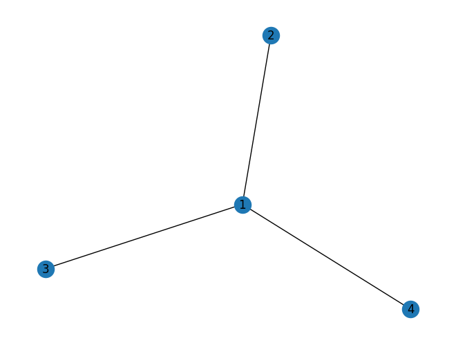

Graph
#
!pip install matplotlib
Looking in indexes: https://pypi.org/simple, https://us-python.pkg.dev/colab-wheels/public/simple/
Requirement already satisfied: matplotlib in /usr/local/lib/python3.9/dist-packages (3.7.1)
Requirement already satisfied: contourpy>=1.0.1 in /usr/local/lib/python3.9/dist-packages (from matplotlib) (1.0.7)
Requirement already satisfied: numpy>=1.20 in /usr/local/lib/python3.9/dist-packages (from matplotlib) (1.22.4)
Requirement already satisfied: fonttools>=4.22.0 in /usr/local/lib/python3.9/dist-packages (from matplotlib) (4.39.3)
Requirement already satisfied: python-dateutil>=2.7 in /usr/local/lib/python3.9/dist-packages (from matplotlib) (2.8.2)
Requirement already satisfied: kiwisolver>=1.0.1 in /usr/local/lib/python3.9/dist-packages (from matplotlib) (1.4.4)
Requirement already satisfied: importlib-resources>=3.2.0 in /usr/local/lib/python3.9/dist-packages (from matplotlib) (5.12.0)
Requirement already satisfied: packaging>=20.0 in /usr/local/lib/python3.9/dist-packages (from matplotlib) (23.0)
Requirement already satisfied: pillow>=6.2.0 in /usr/local/lib/python3.9/dist-packages (from matplotlib) (8.4.0)
Requirement already satisfied: pyparsing>=2.3.1 in /usr/local/lib/python3.9/dist-packages (from matplotlib) (3.0.9)
Requirement already satisfied: cycler>=0.10 in /usr/local/lib/python3.9/dist-packages (from matplotlib) (0.11.0)
Requirement already satisfied: zipp>=3.1.0 in /usr/local/lib/python3.9/dist-packages (from importlib-resources>=3.2.0->matplotlib) (3.15.0)
Requirement already satisfied: six>=1.5 in /usr/local/lib/python3.9/dist-packages (from python-dateutil>=2.7->matplotlib) (1.16.0)
import networkx as nx
G=nx.Graph()
G.add_edges_from([(1,2),(1,3),(1,4)])
nx.draw(G,with_labels=True)

from networkx.algorithms.bipartite.centrality import closeness_centrality
closeness_centrality(G, =None, distance=None, normalized=True)
File "<ipython-input-3-bb3a60a35f41>", line 2
closeness_centrality(G, =None, distance=None, normalized=True)
^
SyntaxError: invalid syntax
betweenness_centrality(G, k=None, normalized=True, weight=None, endpoints=False, seed=None)
---------------------------------------------------------------------------
NameError Traceback (most recent call last)
<ipython-input-18-36a392faec5d> in <cell line: 1>()
----> 1 betweenness_centrality(G, k=None, normalized=True, weight=None, endpoints=False, seed=None)
NameError: name 'betweenness_centrality' is not defined
2. Implementasikan ulang Shakunni/Extractive-Text-Summarization#
Importing important libraries#
#install library yang digunakan dalam meringkas dokumen
!pip install PyPDF2
!pip install docx2txt
!pip install matplotlib
Looking in indexes: https://pypi.org/simple, https://us-python.pkg.dev/colab-wheels/public/simple/
Requirement already satisfied: PyPDF2 in /usr/local/lib/python3.9/dist-packages (3.0.1)
Requirement already satisfied: typing_extensions>=3.10.0.0 in /usr/local/lib/python3.9/dist-packages (from PyPDF2) (4.5.0)
Looking in indexes: https://pypi.org/simple, https://us-python.pkg.dev/colab-wheels/public/simple/
Requirement already satisfied: docx2txt in /usr/local/lib/python3.9/dist-packages (0.8)
Looking in indexes: https://pypi.org/simple, https://us-python.pkg.dev/colab-wheels/public/simple/
Requirement already satisfied: matplotlib in /usr/local/lib/python3.9/dist-packages (3.7.1)
Requirement already satisfied: pillow>=6.2.0 in /usr/local/lib/python3.9/dist-packages (from matplotlib) (8.4.0)
Requirement already satisfied: fonttools>=4.22.0 in /usr/local/lib/python3.9/dist-packages (from matplotlib) (4.39.3)
Requirement already satisfied: importlib-resources>=3.2.0 in /usr/local/lib/python3.9/dist-packages (from matplotlib) (5.12.0)
Requirement already satisfied: python-dateutil>=2.7 in /usr/local/lib/python3.9/dist-packages (from matplotlib) (2.8.2)
Requirement already satisfied: numpy>=1.20 in /usr/local/lib/python3.9/dist-packages (from matplotlib) (1.22.4)
Requirement already satisfied: pyparsing>=2.3.1 in /usr/local/lib/python3.9/dist-packages (from matplotlib) (3.0.9)
Requirement already satisfied: kiwisolver>=1.0.1 in /usr/local/lib/python3.9/dist-packages (from matplotlib) (1.4.4)
Requirement already satisfied: contourpy>=1.0.1 in /usr/local/lib/python3.9/dist-packages (from matplotlib) (1.0.7)
Requirement already satisfied: cycler>=0.10 in /usr/local/lib/python3.9/dist-packages (from matplotlib) (0.11.0)
Requirement already satisfied: packaging>=20.0 in /usr/local/lib/python3.9/dist-packages (from matplotlib) (23.0)
Requirement already satisfied: zipp>=3.1.0 in /usr/local/lib/python3.9/dist-packages (from importlib-resources>=3.2.0->matplotlib) (3.15.0)
Requirement already satisfied: six>=1.5 in /usr/local/lib/python3.9/dist-packages (from python-dateutil>=2.7->matplotlib) (1.16.0)
# numpy library helps in working with arrays: array creation and manipulation
# this implementation uses array for storing the matrices generated as 2-D arrays
# PyPDF2 is a library used for reading the PDF files
# docx2txt is the library used for reading Word documents
# sys library has been used for printing the size of data structures used in the pr
import numpy as np
import PyPDF2
import docx2txt
import sys
# matplotlib is a library that is used to visualize the data by drawing graphs of matrix inputs
# we will use it for drawing the matrices generated later in the program
# %matplotlib inline is a command used to show the graphs in the jupyter notebook
import matplotlib.pyplot as plt
%matplotlib inline
# networkx library helps in working with graphs ...
# and later performing the PageRank algorithm ...
# which is the crux of this implementation to find ...
# the importance of each sentence using their 'rank' as a metric ...
# rank, the output of the method textrank, is a measure of importance of sentences
# this library has been used in the cell no. ()
import networkx as nx
# the PunktSentenceTokenizer library is being imported from the file punkt.py contained in package nltk.tokenize
# this is used to tokenize the document into sentences
# Tokenization: Tokenization is the process of demarcating and possibly classifying..
# sections of a string of input characters.
# The resulting tokens are then passed on to some other form of processing.
from nltk.tokenize.punkt import PunktSentenceTokenizer
# TfidfTransformer and CountVectorizer libraries are being imported
# CountVectorizer: In this implementation, a CountVectorizer object is being created that ..
# will be used for creating the document-term matrix
# tFidTransformer: In this implementation,TfidfTransformer is used for executing the method fit_transform()...
# which provides the output as a document-term matrix normalized (value 0-1) according to the TF-IDF
# TF(Term Frequency): the no. of times a term(a word here) appears in the current document(single sentence here)
# IDF(Inverse Document Frequency): the no. of times a term(a word here) appears in the entire corpus
# Corpus: set of all sentences
from sklearn.feature_extraction.text import TfidfTransformer, CountVectorizer
Function to read the document from user#
Supported formats: .txt, .pdf
Input: Takes the name of the file as input.
Output: Returns a string output containing the contents of the file.
# we are going to show an example of how the method is working
# first let's take the document as an input
def readDoc():
name = input('Please input a file name: ')
print('You have asked for the document {}'.format(name))
# now read the type of document
if name.lower().endswith('.txt'):
choice = 1
elif name.lower().endswith('.pdf'):
choice = 2
else:
choice = 3
# print(name)
print(choice)
# Case 1: if it is a .txt file
if choice == 1:
f = open(name, 'r')
document = f.read()
f.close()
# Case 2: if it is a .pdf file
elif choice == 2:
pdfFileObj = open(name, 'rb')
pdfReader = PyPDF2.PdfFileReader(pdfFileObj)
pageObj = pdfReader.getPage(0)
document = pageObj.extractText()
pdfFileObj.close()
# Case 3: none of the format
else:
print('Failed to load a valid file')
print('Returning an empty string')
document = ''
print(type(document))
return document
Function to tokenize the document#
Input: String of text document
Output: A list containing sentences as its elements
# the function used for tokenizing the sentences
# tokenization of a sentence: '''provided in cell() above'''
def tokenize(document):
# We are tokenizing using the PunktSentenceTokenizer
# we call an instance of this class as sentence_tokenizer
doc_tokenizer = PunktSentenceTokenizer()
# tokenize() method: takes our document as input and returns a list of all the sentences in the document
# sentences is a list containing each sentence of the document as an element
sentences_list = doc_tokenizer.tokenize(document)
return sentences_list
Read the document#
# reading a file and
# printing the size of the file
document = readDoc()
print('The length of the file is:', end=' ')
print(len(document))
Please input a file name: story1.txt
You have asked for the document story1.txt
1
---------------------------------------------------------------------------
FileNotFoundError Traceback (most recent call last)
<ipython-input-24-3d2a36d056b4> in <cell line: 3>()
1 # reading a file and
2 # printing the size of the file
----> 3 document = readDoc()
4 print('The length of the file is:', end=' ')
5 print(len(document))
<ipython-input-22-4da83aee54d1> in readDoc()
17
18 if choice == 1:
---> 19 f = open(name, 'r')
20 document = f.read()
21 f.close()
FileNotFoundError: [Errno 2] No such file or directory: 'story1.txt'